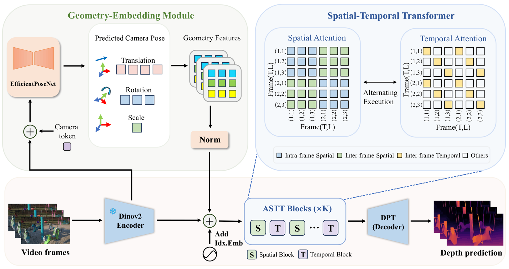

Abstract
Video depth estimation extends monocular prediction into the temporal domain to ensure coherence. However, existing methods often suffer from spatial blurring in fine-detail regions and temporal inconsistencies. We argue that current approaches, which primarily rely on temporal smoothing via Transformers, struggle to maintain strict 3D geometric consistency-particularly under rotations or drastic view changes. To address this, we propose GemDepth, a framework built on the insight that an explicit awareness of camera motion and global 3D structure is a prerequisite for 3D consistency. Distinctively, GemDepth introduces a Geometry-Embedding Module (GEM) that predicts inter-frame camera poses to generate implicit geometric embeddings. This injection of motion priors equips the network with intrinsic 3D perception and alignment capabilities. Guided by these geometric cues, our Alternating Spatio-Temporal Transformer (ASTT) captures latent point-level correspondences to simultaneously enhance spatial precision for sharp details and enforce rigorous temporal consistency. Furthermore, GemDepth employs a data-efficient training strategy, effectively bridging the gap between high efficiency and robust geometric consistency. As shown in Fig.2, comprehensive evaluations demonstrate that GemDepth achieves state-of-the-art performance across multiple datasets, particularly in complex dynamic scenarios. class="external-link button is-normal is-rounded is-dark">.
Method

Overview of GemDepth Framework. GemDepth is a framework built on the insight that an explicit awareness of camera motion and global 3D structure is a prerequisite for 3D consistency. Distinctively, GemDepth introduces a Geometry-Embedding Module (GEM) that predicts inter-frame camera poses to generate implicit geometric embeddings. This injection of motion priors equips the network with intrinsic 3D perception and alignment capabilities. Guided by these geometric cues, our Alternating Spatio-Temporal Transformer (ASTT) captures latent point-level correspondences to simultaneously enhance spatial precision for sharp details and enforce rigorous temporal consistency.
Qualitative Results

GemDepth

VideoDepthAnything

GemDepth

VideoDepthAnything

Pointcloud Comparison on Scannet

Pointcloud Comparison on Bonn

Pointcloud Comparison on KITTI
Quantitative Evaluation
Quantitative results on standard benchmarks. We evaluate GemDepth across zero-shot depth estimation, temporal consistency, and 3D geometric accuracy. Our method consistently achieves state-of-the-art performance, demonstrating robust generalization and superior geometric fidelity.
1. Zero-shot Depth Estimation
| Method | Sintel (~50 frames) | Bonn (500 frames) | Scannet (500 frames) | KITTI (500 frames) | Runtime (ms) | ||||
|---|---|---|---|---|---|---|---|---|---|
| AbsRel↓ | δ₁↑ | AbsRel↓ | δ₁↑ | AbsRel↓ | δ₁↑ | AbsRel↓ | δ₁↑ | ||
| NVDS | 0.408 | 0.464 | 0.199 | 0.674 | 0.207 | 0.628 | 0.233 | 0.614 | 258 |
| ChronoDepth | 0.192 | 0.673 | 0.199 | 0.665 | 0.169 | 0.665 | 0.243 | 0.576 | 617 |
| DepthCrafter | 0.299 | 0.695 | 0.153 | 0.803 | 0.169 | 0.730 | 0.164 | 0.753 | 980 |
| RollingDepth | 0.417 | 0.375 | 0.088 | 0.931 | 0.102 | 0.901 | 0.107 | 0.887 | 280 |
| DepthAnythingV2 | 0.390 | 0.541 | 0.127 | 0.864 | 0.150 | 0.768 | 0.137 | 0.815 | 79 |
| VideoDepthAnything | 0.295 | 0.644 | 0.071 | 0.959 | 0.089 | 0.926 | 0.083 | 0.944 | 85 |
| GemDepth-DAV2(Ours) | 0.188 | 0.812 | 0.055 | 0.970 | 0.069 | 0.959 | 0.077 | 0.950 | 94 |
| GemDepth-VDA(Ours) | 0.157 | 0.827 | 0.051 | 0.978 | 0.066 | 0.967 | 0.071 | 0.955 | 99 |
Temporal Consistency
| Method | DepthAnythingV2 | RollingDepth | VideoDepthAnything | GemDepth-DAV2 | GemDepth-VDA |
|---|---|---|---|---|---|
| TAE ↓ | 1.14 | 0.65 | 0.57 | 0.50 | 0.47 |
2. 3D Geometric Accuracy
| Method | Params | Scannet | Sintel | Bonn | |||||||||
|---|---|---|---|---|---|---|---|---|---|---|---|---|---|
| ATE ↓ | F1 ↑ | AbsRel ↓ | TAE ↓ | ATE ↓ | F1 ↑ | AbsRel ↓ | TAE ↓ | ATE ↓ | F1 ↑ | AbsRel ↓ | TAE ↓ | ||
| VGGT | 1.10B | 0.02 | 65.46 | 0.13 | 1.92 | 0.02 | 70.47 | 0.55 | 1.18 | 0.02 | 76.58 | 0.20 | 2.38 |
| DA3 | 1.19B | 0.02 | 65.91 | 0.11 | 1.12 | 0.02 | 71.91 | 0.38 | 1.37 | 0.02 | 78.44 | 0.18 | 2.87 |
| GemDepth(Ours) | 0.58B | 0.03 | 69.01 | 0.07 | 0.47 | 0.03 | 72.66 | 0.16 | 0.84 | 0.03 | 90.43 | 0.05 | 2.03 |
BibTeX
@article{cheng2026gemdepth,
title={GemDepth: Geometry-Embedded Features for 3D-Consistent Video Depth},
author={Cheng, Yuecheng LiulJunda and Liu, Longliang and Liao, Wenjing and Cheng, Hanrui and Wang, Yuzhou and Yang, Xin},
journal={arXiv preprint arXiv:2605.10525},
year={2026}
}